SECCIÓN
MANTENIMIENTO Y REPARACIÓN
servicio con vehículo en marcha
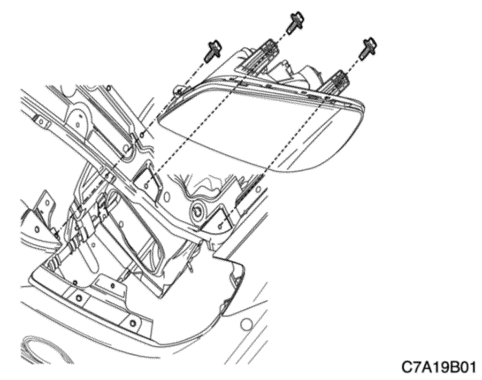


Faros delanteros
Procedimiento de desmontaje
- Desconecte el cable negativo de la batería.
- Quite la tapa superior de la rejilla del radiador.
- Quite tornillos y desmonte el conjunto del faro.
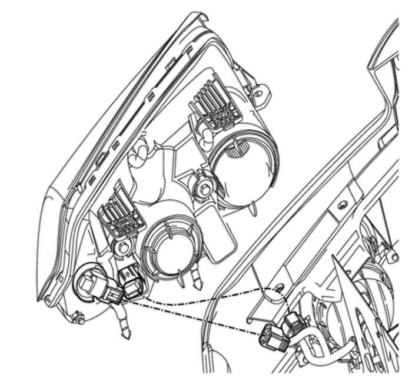
- Desenchufe los conectores eléctricos del conjunto del faro.
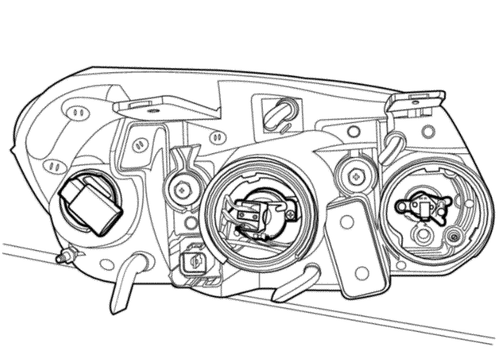
- Quite la tapa que oculta las bombillas del faro.
- Desenchufe los conectores eléctricos de las bombillas del faro.
- Desmonte las bombillas del faro.
procedimiento de montaje
- Monte las bombillas del faro.
- Enchufe los conectores eléctricos de las bombillas del faro.
- Coloque la tapa que oculta las bombillas del faro.
- Enchufe los conectores eléctricos del conjunto del faro.
- Monte el conjunto del faro con sus tornillos.
Apretar
Apriete los tornillos del conjunto del faro hasta 7 N•m (62 lb-pulg.).
- Monte la tapa superior de la rejilla del radiador.
- Conecte el cable negativo de la batería.
Luz de estacionamiento e intermitentes delanteros
Procedimiento de desmontaje
- Desconecte el cable negativo de la batería.
- Desmonte la lámpara. Consulte el apartado "Faro" de esta sección.
- Gire y retire las bombillas del faro.
procedimiento de montaje
- Coloque la bombilla de repuesto y gírela para montarla en el faro.
- Enchufe el conector eléctrico.
Aviso: Metales distintos en contacto directo pueden corroerse rápidamente. Asegúrese de utilizar los elementos de sujeción correctos para evitar una corrosión prematura.
- Monte el faro. Consulte el apartado "Faro" de esta sección.
- Conecte el cable negativo de la batería.
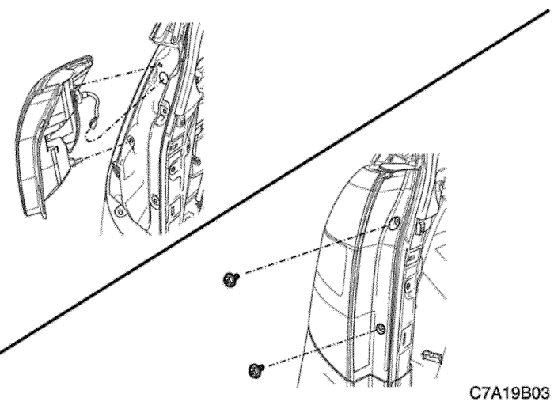
Faros combinados traseros
Procedimiento de desmontaje
- Desconecte el cable negativo de la batería.
- Desenchufe los conectores eléctricos.
- Quite las tuercas y desmonte el conjunto de la lámpara.
- Quite cualquier bombilla que no funcione.
procedimiento de montaje
- Monte las bombillas de repuesto.
Aviso: Metales distintos en contacto directo pueden corroerse rápidamente. Asegúrese de utilizar los elementos de sujeción correctos para evitar una corrosión prematura.
- Monte el conjunto de la lámpara con sus tuercas.
Apretar
Apriete las tuercas de fijación del combinado de luces trasero hasta 2,5 N•m (22 lb-pulg.).
- Enchufe los conectores eléctricos.
- Conecte el cable negativo de la batería.

Tercera luz de freno
Procedimiento de desmontaje
- Desconecte el cable negativo de la batería.
- Desmonte el aplique superior de la puerta trasera levadiza. Consulte la Sección 9S, Parte trasera de la carrocería.
- Desenchufe el conector eléctrico.
- Desmonte la bombilla de la luz CHMSL.
procedimiento de montaje
- Ponga la bombilla de repuesto de la luz CHMSL.
- Enchufe el conector eléctrico.
Aviso: Metales distintos en contacto directo pueden corroerse rápidamente. Asegúrese de utilizar los elementos de sujeción correctos para evitar una corrosión prematura.
- Monte el aplique superior de la puerta trasera levadiza. Consulte la Sección 9S, Parte trasera de la carrocería.
- Conecte el cable negativo de la batería.

Luces de aviso de giro laterales
Procedimiento de desmontaje
- Desconecte el cable negativo de la batería.
- Desmonte el cristal del espejo retrovisor exterior. Consulte la Sección 9L, Lunas y espejos.
- Quite los tornillos y desmonte el conjunto del intermitente lateral.
- Desenchufe el conector eléctrico.
procedimiento de montaje
Aviso: El conjunto del intermitente lateral no tiene elementos que se puedan reparar. Los LED sirven para alumbrar. Si no funciona algún LED, debe sustituirse el conjunto del intermitente lateral.
- Enchufe el conector eléctrico.
- Monte el conjunto del intermitente lateral con sus tornillos.
- Monte el cristal del espejo retrovisor exterior. Consulte la Sección 9L, Lunas y espejos.
- Conecte el cable negativo de la batería.
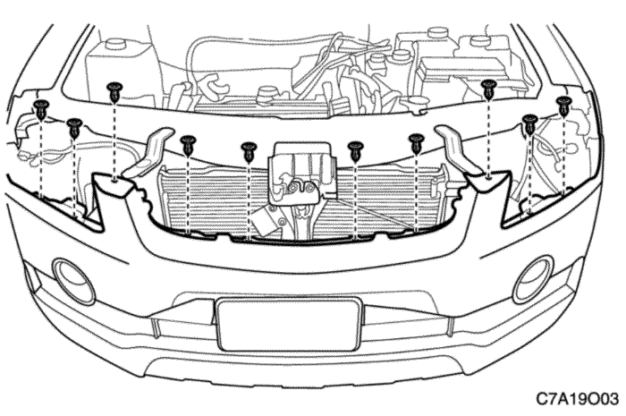
Faros antiniebla
Procedimiento de desmontaje
- Desconecte el cable negativo de la batería.
- Desmonte el tablero del parachoques delantero. Consulte la Sección 9O, "Parachoques y tableros".
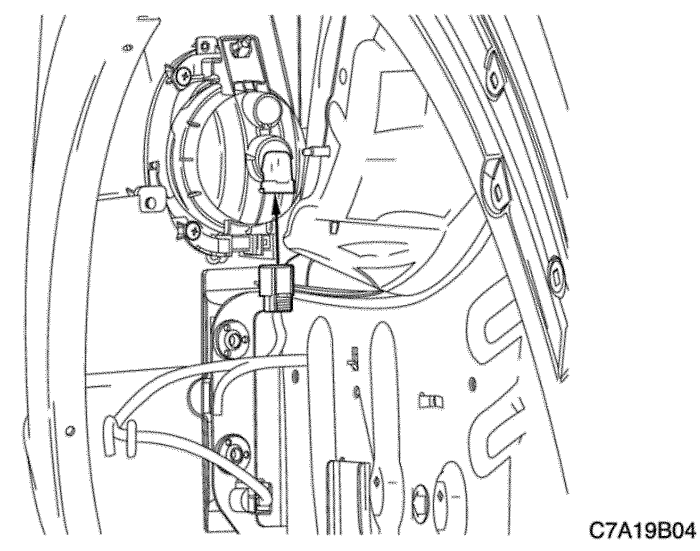
- Quite los tornillos que sujetan el conjunto de luces antiniebla.
- Desenchufe el conector eléctrico del conjunto de luces antiniebla.
- Desmonte el conjunto de luces antiniebla.
- Quite la bombilla del conjunto de luces antiniebla.
procedimiento de montaje
- Coloque la bombilla en el conjunto de luces antiniebla.
Aviso: Metales distintos en contacto directo pueden corroerse rápidamente. Asegúrese de utilizar los elementos de sujeción correctos para evitar una corrosión prematura.
- Monte el conjunto de luces antiniebla con sus tornillos.
- Enchufe el conector eléctrico.
- Monte el tablero del parachoques delantero. Consulte la Sección 9O, "Parachoques y tableros".
- Conecte el cable negativo de la batería.
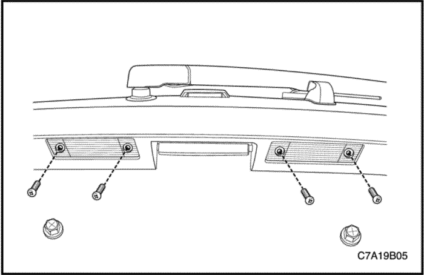
Luces de matrícula
Procedimiento de desmontaje
- Desconecte el cable negativo de la batería.
- Quite los tornillos y el conjunto de la luz de la matrícula.
- Desmonte la bombilla.
procedimiento de montaje
- Monte la bombilla de repuesto.
Aviso: Metales distintos en contacto directo pueden corroerse rápidamente. Asegúrese de utilizar los elementos de sujeción correctos para evitar una corrosión prematura.
- Monte el conjunto de la luz de la matrícula con sus tornillos.
Apretar
Apriete los tornillos del conjunto de la luz de la matrícula hasta 4 N•m (35 lb-pulg.).
- Conecte el cable negativo de la batería.
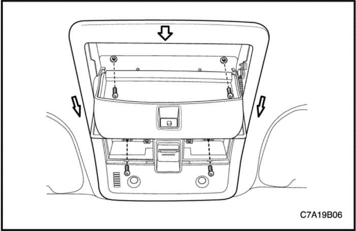
Luz de habitáculo
Procedimiento de desmontaje
- Desconecte el cable negativo de la batería.
- Introduzca un destornillador por el hueco del borde del cristal y haga palanca para desmontar la luz para lectura de mapas.
- Quite los tornillos y desmonte el alojamiento de la luz para lectura de mapas del forro del techo.
- Desenchufe el conector eléctrico.
- Desmonte la bombilla.
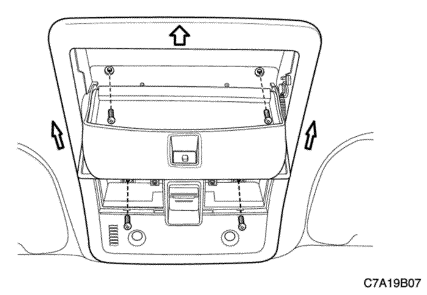
Procedimiento de montaje
- Monte la bombilla de repuesto.
- Enchufe el conector eléctrico.
Aviso: Metales distintos en contacto directo pueden corroerse rápidamente. Asegúrese de utilizar los elementos de sujeción correctos para evitar una corrosión prematura.
- Monte el alojamiento de la luz para lectura de mapas en el forro del techo con sus tornillos.
Apretar
Apriete el tornillo del alojamiento de la luz para lectura de mapas hasta 2 N•m (18 lb-pulg.).
- Presione el cristal de la luz para lectura de mapas sobre su alojamiento.
- Conecte el cable negativo de la batería.
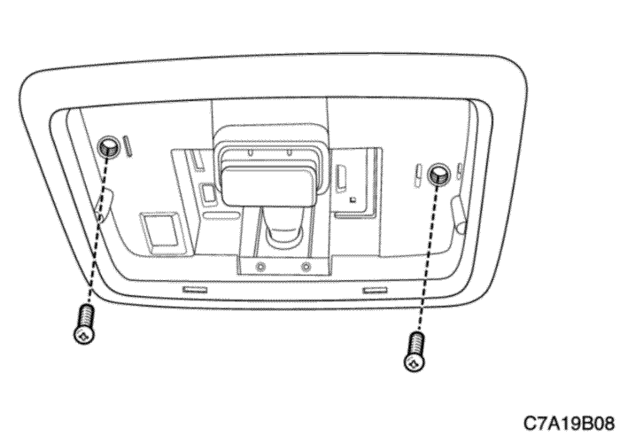
luz de habitáculo
Procedimiento de desmontaje
- Desconecte el cable negativo de la batería.
- Introduzca un destornillador por el hueco del borde del cristal y haga palanca para desmontar la luz del habitáculo.
- Quite los tornillos y desmonte el alojamiento de la luz del habitáculo del forro del techo.
- Desenchufe el conector eléctrico.
- Desmonte la bombilla.
Procedimiento de montaje
- Monte la bombilla de repuesto.
- Enchufe el conector eléctrico.
Aviso: Metales distintos en contacto directo pueden corroerse rápidamente. Asegúrese de utilizar los elementos de sujeción correctos para evitar una corrosión prematura.
- Monte el alojamiento de la luz interior del habitáculo en el forro del techo con sus tornillos.
Apretar
Apriete los tornillos de la luz del habitáculo hasta 2 N•m (18 lb-pulg.).
- Presione el cristal de la luz del habitáculo sobre su alojamiento.
- Conecte el cable negativo de la batería.
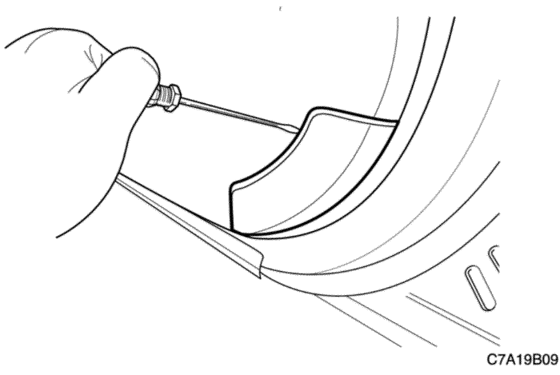
Luz de estribo de la puerta delantera
Procedimiento de desmontaje
- Desconecte el cable negativo de la batería.
- Retire el cristal de la luz de estribo de la puerta delantera.
- Desmonte la luz de estribo de la puerta delantera.
- Desenchufe el conector eléctrico.
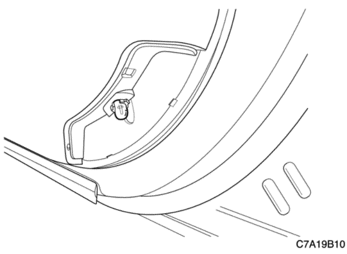
Procedimiento de montaje
- Enchufe el conector eléctrico.
- Monte la bombilla de repuesto de la luz de estribo de la puerta delantera.
Aviso: Metales distintos en contacto directo pueden corroerse rápidamente. Asegúrese de utilizar los elementos de sujeción correctos para evitar una corrosión prematura.
- Coloque el cristal de la luz de estribo de la puerta delantera.
- Conecte el cable negativo de la batería.

Luz del compartimento del panel de instrumentos
Procedimiento de desmontaje
- Desconecte el cable negativo de la batería.
- Abra la guantera.
- Desmonte la luz de la guantera.
- Desenchufe el conector eléctrico.
procedimiento de montaje
- Enchufe el conector eléctrico.
- Monte la luz de la guantera.
- Cierre la guantera.
- Conecte el cable negativo de la batería.
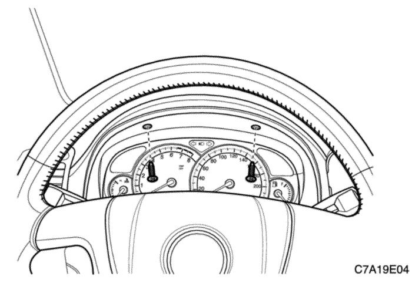
XBCM
Procedimiento de desmontaje
- Desconecte el cable negativo de la batería.
- Desmonte el cuadro de instrumentos. Consulte la Sección 9E, Instrumentación/información para el conductor.
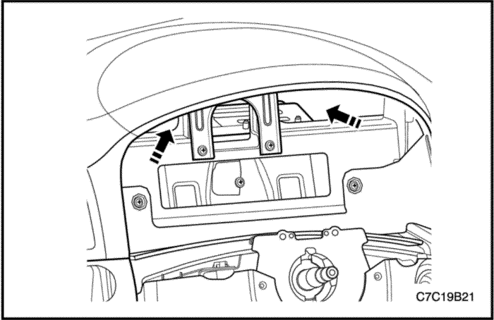
- Puede verse el X-BCM a través del orificio del soporte y poner las manos en el orificio a lo largo de la flecha.
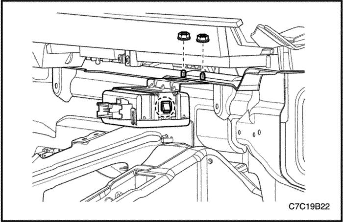
- Desbloquee los dos lados del X-BCM y quite dos tuercas por el orificio.
- Extraiga el soporte por el orificio.
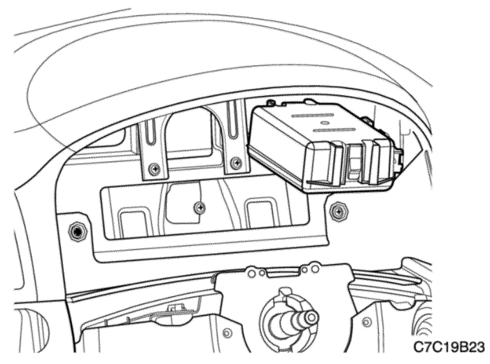
- Desenchufe el conector eléctrico.
- Extraiga el X-BCM por el orificio.
Importante: Realice la reprogramación SPO cuando se sustituya el módulo X - BCM.
procedimiento de montaje
- Enchufe el conector eléctrico.
- Monte el X-BCM y el soporte con las tuercas en el orificio.
- Monte el cuadro de instrumentos. Consulte la Sección 9E, Instrumentación/información para el conductor.
- Conecte el cable negativo de la batería.
DESCRIPCIÓN GENERAL Y FUNCIONAMIENTO DEL SISTEMA
Faros delanteros
Los faros se controlan mediante la palanca multifunción situada en el lado izquierdo de la columna de la dirección. Los faros se encenderán con la llave de contacto en la posición ON. Si el interruptor de los faros está activado y se pone la llave de contacto en posición ACC o LOCK, los faros se apagarán automáticamente. Si se gira el interruptor de los faros a la primera posición, se encenderán las luces de estacionamiento, las luces de la matrícula y la iluminación del panel de instrumentos. Si se gira a la segunda posición, se encenderán todas las luces anteriores además de los faros. Si se gira el interruptor a la posición OFF, se apagarán todas las luces.
Los faros pueden encenderse de 2 maneras. La primera, cuando el conductor pone el interruptor de los faros en la posición HEADLAMP (faros), para que funcionen con normalidad. La segunda, poniendo el interruptor de los faros en la posición AUTO para activar el control automático de las luces (ALC). Con el control automático de las luces los faros usarán luces de circulación diurna (DRL) durante el día o se encenderán en condiciones de poca luz.
El control de encendido/apagado de los faros lo determina el módulo de control de la carrocería (BCM) mediante una señal en el interruptor de los faros por el circuito de entrada cuando dicho interruptor está en la posición HEAD (faros). Cuando el interruptor de los faros está en la posición AUTO, el BCM determina si enciende o apaga los faros según la tensión del sensor de luz ambiente.
La luces de carretera y cruce se controlan también mediante esta palanca. Cuando los faros están encendidos, se puede cambiar de luces de carretera a luces de cruce empujando la palanca hasta que el interruptor haga clic. Cuando se encienda la luz de carretera de los faros, también se encenderá una luz indicadora en el conjunto del cuadro de instrumentos. Para volver a poner las luces de cruce, tire de la palanca. Los faros deben estar orientados para que alumbren correctamente la carretera. La orientación de los faros debe revisarse cada vez que se monten nuevos conjuntos de faros o cuando las reparaciones en la parte delantera del vehículo puedan haber desplazado el conjunto del faro o sus soportes.
Luces de funcionamiento diurno
El sensor de luz ambiente es un transistor sensible a la luz que varía la señal de tensión que envía al módulo de control de la carrocería (BCM) en respuesta a los cambios en los niveles de luz (ambiente) del exterior. Cuando el BCM recibe esta señal, enciende tan sólo las luces de cruce de los faros con poca intensidad para el funcionamiento de las luces de circulación diurna (DRL) o enciende las luces de cruce y las luces exteriores para un control automático de las luces (ALC). Cualquier acción o situación que encienda los faros, cancelará el funcionamiento de las luces de circulación diurna. A los treinta segundos de arrancar el motor con el interruptor de los faros apagado, las luces de circulación diurna realizan una de estas dos acciones:
- Encienden las luces de cruce de los faros a poca intensidad con luz del día.
- Encienden las luces de cruce de los faros y luces de estacionamiento exteriores en situaciones de poca luz.
Las luces de circulación diurna (DRL) funcionan cuando se gira la llave de contacto a la posición RUN (en marcha), el freno de estacionamiento no está puesto y la caja de cambios no está en la posición de estacionamiento (PARK). Cuando se cumplen estas condiciones, el sensor de luz ambiente de DRL indica condiciones de luz diurna y se encienden las luces DRL.
Luces de aviso de giro y de estacionamiento
Las luces de estacionamiento pueden encenderse girando el interruptor de los faros a su primera posición. Para apagarlas, gire el interruptor a la posición de apagado.
Cuando se accionan los intermitentes, los intermitentes correspondientes parpadean indicando el giro. Los intermitentes traseros, delanteros y laterales sólo funcionan cuando la llave de contacto está en posición ON.
Los intermitentes traseros y delanteros se controlan mediante la palanca multifunción, situada en el lado izquierdo de la columna de dirección. Las luces intermitentes se encenderán al moverla palanca hacia arriba o hacia abajo (desde la posición de apagado). Una vez realizado el giro, la palanca se liberará automáticamente y los intermitentes dejarán de parpadear.
Para cambiar de carril o en los giros cerrados en los que el volante no gira lo suficiente para cancelar la señal, desplace el intermitente hasta el primer punto de retención y manténgalo en dicha posición. El intermitente se apagará cuando se libere la palanca.
Faros antiniebla
El interruptor de las luces antiniebla está situado en el panel de instrumentos, encima del equipo de sonido. Para encender la luces antiniebla, encienda primero los faros. A continuación, pulse el interruptor de las luces antiniebla. La luz indicadora del cuadro de instrumentos se encenderá para indicar que las luces antiniebla están encendidas. Pulse el interruptor de nuevo para apagar las luces. A continuación, se apagará la luz indicadora.
La luces antiniebla deben estar orientadas para la iluminación correcta de la carretera. La orientación de las luces antiniebla debe revisarse cada vez que se monte una bombilla nueva o cuando las reparaciones en la parte delantera del vehículo puedan haber desplazado el conjunto de las luces antiniebla o sus fijaciones.
Faros combinados traseros
Las luces de posición traseras, las luces de freno, luces de marcha atrás y los intermitentes forman un conjunto.
Al encender los faros o las luces de estacionamiento, se encienden también las luces de posición traseras. Cuando se pisa el pedal de freno, las luces de posición traseras se iluminarán con más intensidad para servir de luz de freno.
Tercera luz de freno
La luz de freno de fijación central superior se encuentra situada en la luneta trasera y también se encenderá al pisar el pedal de freno.
Luces de marcha atrás
Las luces de marcha atrás se encenderán cuando se seleccione la marcha atrás en la caja de cambios. En vehículos con caja de cambios automática, las luces de marcha atrás se activan al seleccionar la posición estacionamiento/punto muerto.
Luces de matrícula
Las luces de la matrícula se iluminarán cuando se enciendan los faros o las luces de estacionamiento. Las luces de matrícula van montadas en el capó trasero, sobre la matrícula.
Módulo de control de la carrocería de exportación (XBCM)
Importante: Realice la reprogramación SPO cuando se sustituya el módulo X - BCM. El módulo X - BCM está situado detrás del cuadro.
- Función del módulo de la alarma de sirena
El XBCM será el equipo principal de comunicaciones con el módulo de la sirena de alarma del vehículo. El XBCM activará, desactivará y ajustará la alarma basándose en el estado de los dispositivos antirrobo del vehículo (VTD) o de sus contenidos (CTD). El XBCM recibirá órdenes por señales GMLAN definiendo el estado actual del CTD del vehículo.
- Función de claxon del dispositivo antirrobo de contenidos (CTD) auxiliar
El XBCM se encargará de controlar el relé del claxon del CTD auxiliar.
- Función de detección de indisponibilidad de luces de freno/intermitentes del remolque
Las normativas legales exigen que la función de los intermitentes sea capaz de detectar si una o varias de sus luces no funcionan. Por ello, el XBCM hará un seguimiento por separado de las luces de freno e intermitentes izquierdas y derechas del remolque con el fin de determinar si no funciona alguna de esas luces.